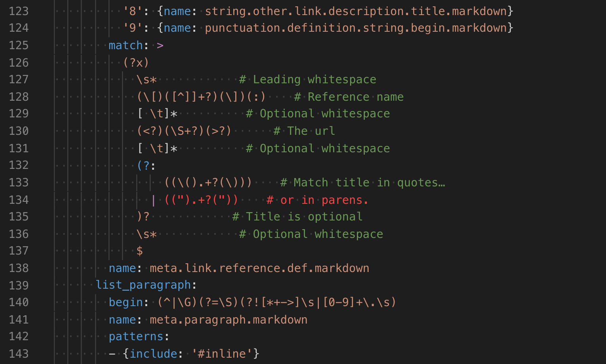
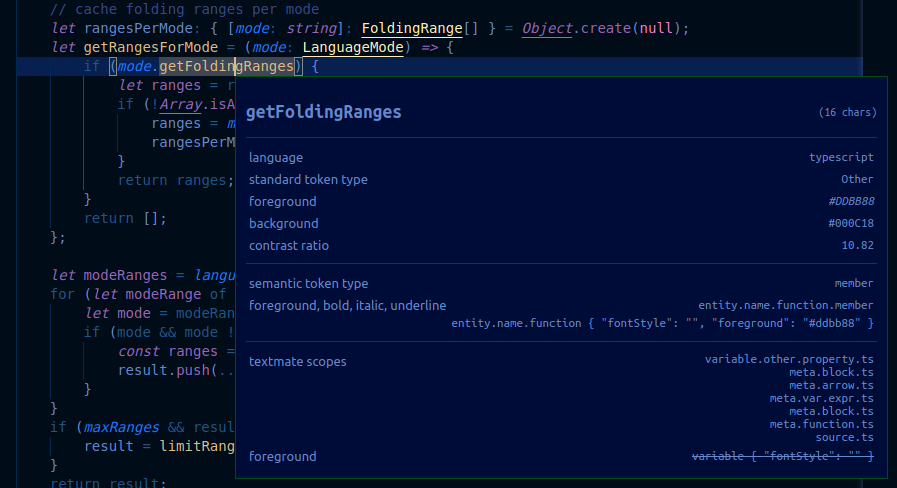

Syntax Highlight Guide
Syntax highlighting determines the color and style of source code displayed in the Visual Studio Code editor. It is responsible for colorizing keywords like if or for in JavaScript differently than strings and comments and variable names.
There are two components to syntax highlighting:
- Tokenization: Breaking text into a list of tokens
- Theming: Using themes or user settings to map the tokens to specific colors and styles
Before diving into the details, a good start is to play with the scope inspector tool and explore what tokens are present in a source file and what theme rules they match to. To see both semantic and syntax token, use a built-in theme (for example, Dark+) on a TypeScript file.
Tokenization
The tokenization of text is about breaking the text into segments and to classify each segment with a token type.
VS Code's tokenization engine is powered by TextMate grammars. TextMate grammars are a structured collection of regular expressions and are written as a plist (XML) or JSON files. VS Code extensions can contribute grammars through the grammars contribution point.
The TextMate tokenization engine runs in the same process as the renderer and tokens are updated as the user types. Tokens are used for syntax highlighting, but also to classify the source code into areas of comments, strings, regex.
Starting with release 1.43, VS Code also allows extensions to provide tokenization through a Semantic Token Provider. Semantic providers are typically implemented by language servers that have a deeper understanding of the source file and can resolve symbols in the context of the project. For example, a constant variable name can be rendered using constant highlighting throughout the project, not just at the place of its declaration.
Highlighting based on semantic tokens is considered an addition to the TextMate-based syntax highlighting. Semantic highlighting goes on top of the syntax highlighting. And as language servers can take a while to load and analyze a project, semantic token highlighting may appear after a short delay.
This article focuses on the TextMate-based tokenization. Semantic tokenization and theming are explained in the Semantic Highlighting guide.
TextMate grammars
VS Code uses TextMate grammars as the syntax tokenization engine. Invented for the TextMate editor, they have been adopted by many other editors and IDEs due to large number of language bundles created and maintained by the Open Source community.
TextMate grammars rely on Oniguruma regular expressions and are typically written as a plist or JSON. You can find a good introduction to TextMate grammars here, and you can take a look at existing TextMate grammars to learn more about how they work.
TextMate tokens and scopes
Tokens are one or more characters that are part of the same program element. Example tokens include operators such as + and *, variable names such as myVar, or strings such as "my string".
Each token is associated with a scope that defines the context of the token. A scope is a dot separated list of identifiers that specify the context of the current token. The + operation in JavaScript, for example, has the scope keyword.operator.arithmetic.js.
Themes map scopes to colors and styles to provide syntax highlighting. TextMate provides list of common scopes that many themes target. In order to have your grammar as broadly supported as possible, try to build on existing scopes rather than defining new ones.
Scopes nest so that each token is also associated with a list of parent scopes. The example below uses the scope inspector to show the scope hierarchy for the + operator in a simple JavaScript function. The most specific scope is listed at the top, with more general parent scopes listed below:

Parent scope information is also used for theming. When a theme targets a scope, all tokens with that parent scope will be colorized unless the theme also provides a more specific colorization for their individual scopes.
Contributing a basic grammar
VS Code supports json TextMate grammars. These are contributed through the grammars contribution point.
Each grammar contribution specifies: the identifier of the language the grammar applies to, the top-level scope name for the tokens of the grammar, and the relative path to a grammar file. The example below shows a grammar contribution for a fictional abc language:
{
"contributes": {
"languages": [
{
"id": "abc",
"extensions": [".abc"]
}
],
"grammars": [
{
"language": "abc",
"scopeName": "source.abc",
"path": "./syntaxes/abc.tmGrammar.json"
}
]
}
}
The grammar file itself consists of a top-level rule. This is typically split into a patterns section that lists the top-level elements of the program and a repository that defines each of the elements. Other rules in the grammar can reference elements from the repository using { "include": "#id" }.
The example abc grammar marks the letters a, b, and c as keywords, and nestings of parens as expressions.
{
"scopeName": "source.abc",
"patterns": [{ "include": "#expression" }],
"repository": {
"expression": {
"patterns": [{ "include": "#letter" }, { "include": "#paren-expression" }]
},
"letter": {
"match": "a|b|c",
"name": "keyword.letter"
},
"paren-expression": {
"begin": "\\(",
"end": "\\)",
"beginCaptures": {
"0": { "name": "punctuation.paren.open" }
},
"endCaptures": {
"0": { "name": "punctuation.paren.close" }
},
"name": "expression.group",
"patterns": [{ "include": "#expression" }]
}
}
}
The grammar engine will try to successively apply the expression rule to all text in the document. For a simple program such as:
a
(
b
)
x
(
(
c
xyz
)
)
(
a
The example grammar produces the following scopes (listed left-to-right from most specific to least specific scope):
a keyword.letter, source.abc
( punctuation.paren.open, expression.group, source.abc
b keyword.letter, expression.group, source.abc
) punctuation.paren.close, expression.group, source.abc
x source.abc
( punctuation.paren.open, expression.group, source.abc
( punctuation.paren.open, expression.group, expression.group, source.abc
c keyword.letter, expression.group, expression.group, source.abc
xyz expression.group, expression.group, source.abc
) punctuation.paren.close, expression.group, expression.group, source.abc
) punctuation.paren.close, expression.group, source.abc
( punctuation.paren.open, expression.group, source.abc
a keyword.letter, expression.group, source.abc
Note that text that is not matched by one of the rules, such as the string xyz, is included in the current scope. The last parenthesis at the end of the file is part of the expression.group even if the end rule is not matched, as end-of-document was found before the end rule was.
Embedded languages
If your grammar includes embedded languages within the parent language, such as CSS style blocks in HTML, you can use the embeddedLanguages contribution point to tell VS Code to treat the embedded language as distinct from the parent language. This ensures that bracket matching, commenting, and other basic language features work as expected in the embedded language.
The embeddedLanguages contribution point maps a scope in the embedded language to a top-level language scope. In the example below, any tokens in the meta.embedded.block.javascript scope will be treated as JavaScript content:
{
"contributes": {
"grammars": [
{
"path": "./syntaxes/abc.tmLanguage.json",
"scopeName": "source.abc",
"embeddedLanguages": {
"meta.embedded.block.javascript": "javascript"
}
}
]
}
}
Now if you try to comment code or trigger snippets inside a set of tokens marked meta.embedded.block.javascript, they will get the correct // JavaScript style comment and the correct JavaScript snippets.
Developing a new grammar extension
To quickly create a new grammar extension, use VS Code's Yeoman templates to run yo code and select the New Language option:
Yeoman will walk you through some basic questions to scaffold the new extension. The important questions for creating a new grammar are:
Language id- A unique identifier for your language.Language name- A human readable name for your language.Scope names- Root TextMate scope name for your grammar.
The generator assumes that you want to define both a new language and a new grammar for that language. If you are creating a grammar for an existing language, just fill these in with your target language's information and be sure to delete the languages contribution point in the generated package.json.
After answering all the questions, Yeoman will create a new extension with the structure:
Remember, if you are contributing a grammar to a language that VS Code already knows about, be sure to delete the languages contribution point in the generated package.json.
Converting an existing TextMate grammar
yo code can also help convert an existing TextMate grammar to a VS Code extension. Again, start by running yo code and selecting Language extension. When asked for an existing grammar file, give it the full path to either a .tmLanguage or .json TextMate grammar file:

Using YAML to write a grammar
As a grammar grows more complex, it can become difficult to understand and maintain it as json. If you find yourself writing complex regular expressions or needing to add comments to explain aspects of the grammar, consider using yaml to define your grammar instead.
Yaml grammars have the exact same structure as a json based grammar but allow you to use yaml's more concise syntax, along with features such as multi-line strings and comments.

VS Code can only load json grammars, so yaml based grammars must be converted to json. The js-yaml package and command-line tool makes this easy.
# Install js-yaml as a development only dependency in your extension
$ npm install js-yaml --save-dev
# Use the command-line tool to convert the yaml grammar to json
$ npx js-yaml syntaxes/abc.tmLanguage.yaml > syntaxes/abc.tmLanguage.json
Injection grammars
Injection grammars let you extend an existing grammar. An injection grammar is a regular TextMate grammar that is injected into a specific scope within an existing grammar. Example applications of injection grammars:
- Highlighting keywords such as
TODOin comments. - Add more specific scope information to an existing grammar.
- Adding highlighting for a new language to Markdown fenced code blocks.
Creating a basic injection grammar
Injection grammars are contributed though the package.json just like regular grammars. However, instead of specifying a language, an injection grammar uses injectTo to specify a list of target language scopes to inject the grammar into.
For this example, we'll create a simple injection grammar that highlights TODO as a keyword in JavaScript comments. To apply our injection grammar in JavaScript files, we use the source.js target language scope in injectTo:
{
"contributes": {
"grammars": [
{
"path": "./syntaxes/injection.json",
"scopeName": "todo-comment.injection",
"injectTo": ["source.js"]
}
]
}
}
The grammar itself is a standard TextMate grammar except for the top level injectionSelector entry. The injectionSelector is a scope selector that specifies which scopes the injected grammar should be applied in. For our example, we want to highlight the word TODO in all // comments. Using the scope inspector, we find that JavaScript's double slash comments have the scope comment.line.double-slash, so our injection selector is L:comment.line.double-slash:
{
"scopeName": "todo-comment.injection",
"injectionSelector": "L:comment.line.double-slash",
"patterns": [
{
"include": "#todo-keyword"
}
],
"repository": {
"todo-keyword": {
"match": "TODO",
"name": "keyword.todo"
}
}
}
The L: in the injection selector means that the injection is added to the left of existing grammar rules. This basically means that our injected grammar's rules will be applied before any existing grammar rules.
Embedded languages
Injection grammars can also contribute embedded languages to their parent grammar. Just like with a normal grammar, an injection grammar can use embeddedLanguages to map scopes from the embedded language to a top-level language scope.
An extension that highlights SQL queries in JavaScript strings, for example, may use embeddedLanguages to make sure all token inside the string marked meta.embedded.inline.sql are treated as SQL for basic language features such as bracket matching and snippet selection.
{
"contributes": {
"grammars": [
{
"path": "./syntaxes/injection.json",
"scopeName": "sql-string.injection",
"injectTo": ["source.js"],
"embeddedLanguages": {
"meta.embedded.inline.sql": "sql"
}
}
]
}
}
Token types and embedded languages
There is one additional complication for injection languages embedded languages: by default, VS Code treats all tokens within a string as string contents and all tokens with a comment as token content. Since features such as bracket matching and auto closing pairs are disabled inside of strings and comments, if the embedded language appears inside a string or comment, these features will also be disabled in the embedded language.
To override this behavior, you can use a meta.embedded.* scope to reset VS Code's marking of tokens as string or comment content. It is a good idea to always wrap embedded language in a meta.embedded.* scope to make sure VS Code treats the embedded language properly.
If you can't add a meta.embedded.* scope to your grammar, you can alternatively use tokenTypes in the grammar's contribution point to map specific scopes to content mode. The tokenTypes section below ensures that any content in the my.sql.template.string scope is treated as source code:
{
"contributes": {
"grammars": [
{
"path": "./syntaxes/injection.json",
"scopeName": "sql-string.injection",
"injectTo": ["source.js"],
"embeddedLanguages": {
"my.sql.template.string": "sql"
},
"tokenTypes": {
"my.sql.template.string": "other"
}
}
]
}
}
Theming
Theming is about assigning colors and styles to tokens. Theming rules are specified in color themes, but users can customize the theming rules in the user settings.
TextMate theme rules are defined in tokenColors and have the same syntax as regular TextMate themes. Each rule defines a TextMate scope selector and a resulting color and style.
When evaluating the color and style of a token, the current token's scope is matched against the rule's selector to find the most specific rule for each style property (foreground, bold, italic, underline)
The Color Theme guide describes how to create a color theme. Theming for semantic tokens is explained in the Semantic Highlighting guide.
Scope inspector
VS Code's built-in scope inspector tool helps debug grammars and semantic tokens. It displays the scopes for the token and the semantic tokens at the current position in a file, along with metadata about which theme rules apply to that token.
Trigger the scope inspector from the Command Palette with the Developer: Inspect Editor Tokens and Scopes command or create a keybinding for it:
{
"key": "cmd+alt+shift+i",
"command": "editor.action.inspectTMScopes"
}

The scope inspector displays the following information:
- The current token.
- Metadata about the token and information about its computed appearance. If you are working with embedded languages, the important entries here
languageandtoken type. - The semantic token section is shown when a semantic token provider is available for the current language and when the current theme supports semantic highlighting. It shows the current semantic token type and modifiers along with the theme rules that match the semantic token type and modifiers.
- The TextMate section shows the scope list for the current TextMate token, with the most specific scope at the top. It also shows the most specific theme rules that match the scopes. This only shows the theme rules that are responsible for the token's current style, it does not show overridden rules. If semantic tokens are present, the theme rules are only shown when they differ from the rule matching the semantic token.